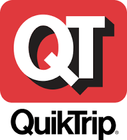
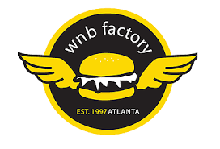
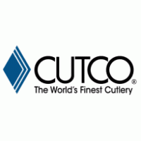

FedEx
In the spring of 2020 I decided to trade in the retail part time
lifestyle for a more labor intensive warehouse job. I applied to
work at FedEx as the pay rate seemed phenomenal and the hours
fairly flexible. I should have known it was a trap when they
hired me so quickly after I applied...I suppose I didn't learn
from my lesson working at QuikTrip. The job started out well;
however, I noticed one of my managers was a bit bossy. A month
into the job, I was fed up with his poor leadership. I put in my
2 weeks notice to my skip manager, and before I could make it
another week... the same bossy manager disrespected me; so I
simply told him I wasn't returning the next day.
Calvin Klein

Calvin Klein was a great job all around. It's only downside was
that it was a retail job, which I find boring. Even with it being
a retail job, It was a small store which made it more
tolerable.
quick trip

QuikTrip is a gas station/convenience store. It was the most labor
intensive retail job you could possibly imagine. There were no
break rooms or seats specifically to keep employees busy. You
could go from mopping the floor, to making a pizza, to governing
a transaction, to helping a customer at a gas pump, to making ice
cream for a family of 12, to cleaning restrooms, to sweeping the
parking lot, just to check your watch and realize that only 5
minutes have passed. This was when I first picked up on the idea
that if you get hired too quickly, the job is probably
undesirable. I figured this was the case as I applied for this
job at 2am, the night after I quit working at WNB; I got invited
for an interview at about 10am and was hired later that same day.
Now I will think twice about any company that hires me within
less than a day of processing.
Wings n' Burgers Factory

WNB was a dream job for a high schooler who loved chicken wings
such as myself. They were (AND STILL ARE) the best wing spot in
Atlanta, had flexible hours, nice co-workers, 30 minute breaks,
and free meals for employees. Did I mention they were the best
wing spot in Atlanta, a city known for having great wing spots?
Okay, just making sure. Anyway, I seem to have bad luck with part
time jobs, and this is where it began. I had a coworker that my
boss called, “baby”. She had poor manners, but her looks seemed
to get her by. We were pretty close at first, but her rude and
disrespectful nature kept me distant. One day she came to work 20
minutes late and had the nerve to yell at me about not being in
the front of the store to let her in right away. Later that day
she made a mistake at the register, blamed me for it, and forced
me to pay for a customer's food. I told my manager about the
situation that night, and she said that since she wasn’t present,
I was on my own. I quit on the spot.
Vector Cutco

I don't know if you've noticed the pattern by now, but this list
is in reverse chronological order making this my first job.
Vector Cutco is a pyramid Scheme that involves employees going
through their contact list, referring friends to the company,
calling friends and family, and making appointments with them to
demo and sell from a catalog of very expensive cutlery. I didn’t
like the job because I am not a fan of selling products that I
wouldn’t buy myself. I felt that sales were being made out of
pity and not from genuine want to buy the product. I quit not
more than a week into the job.